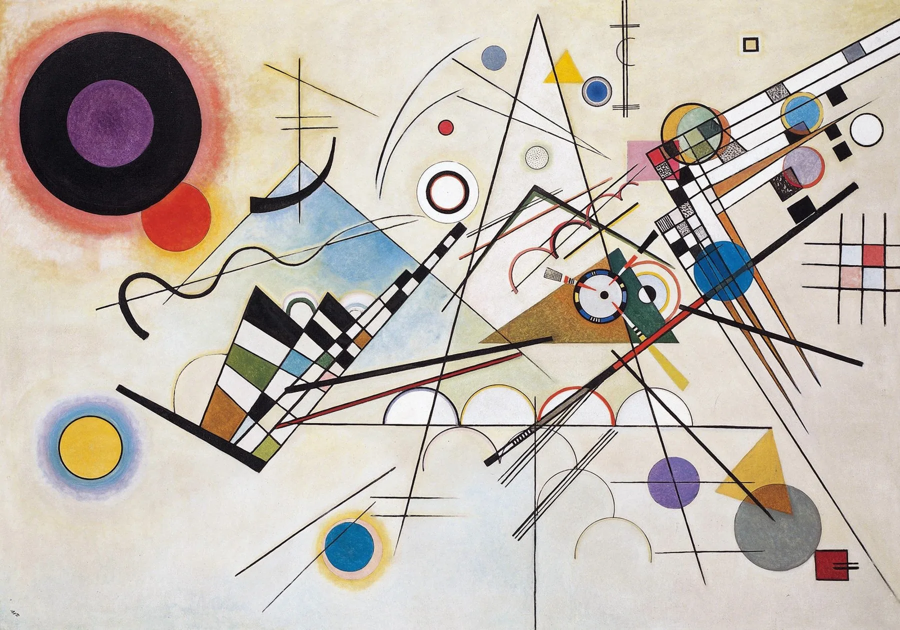
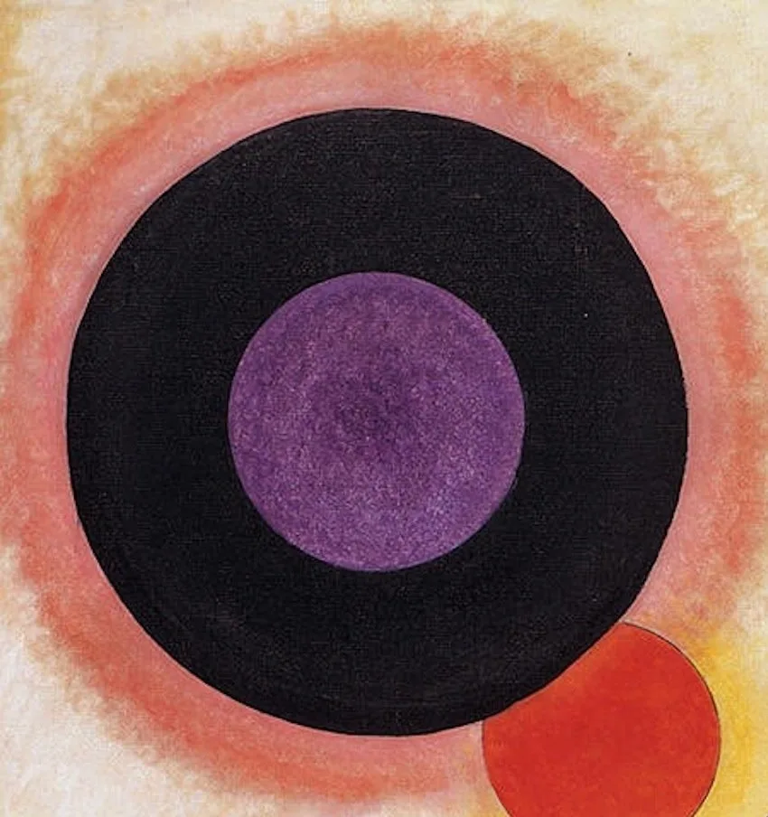
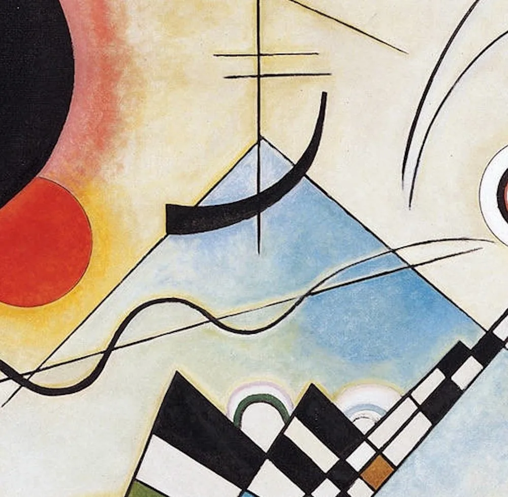
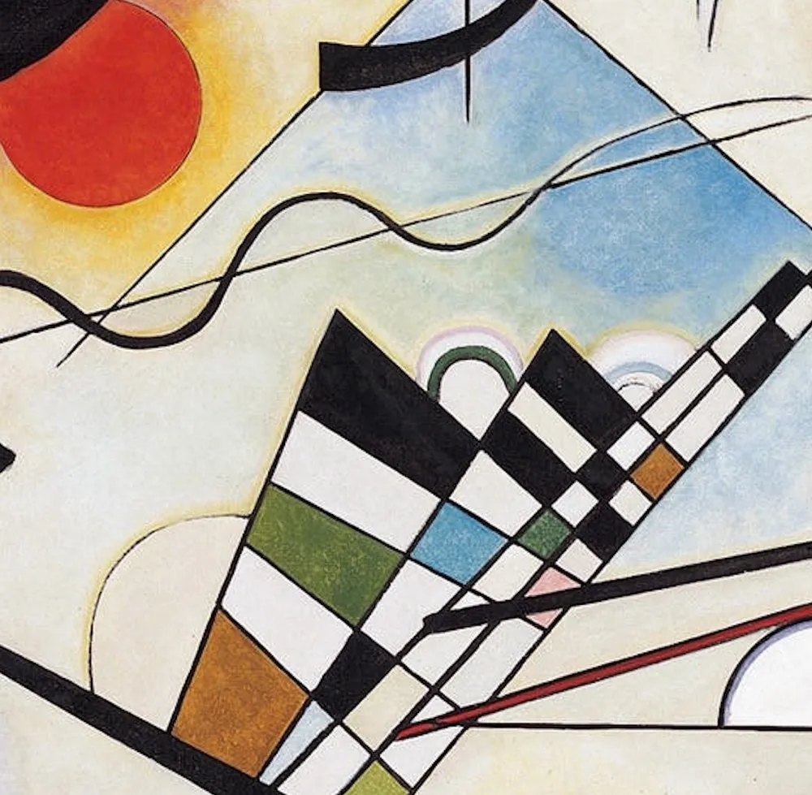
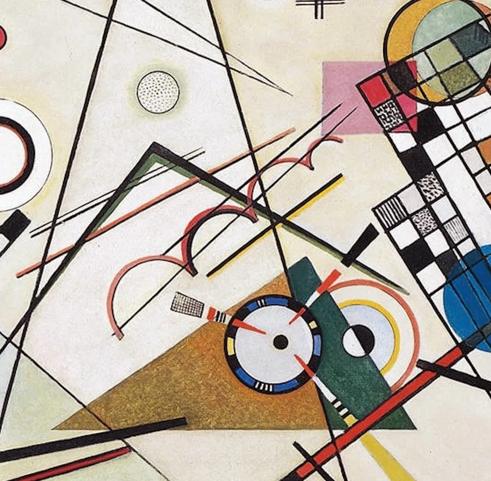
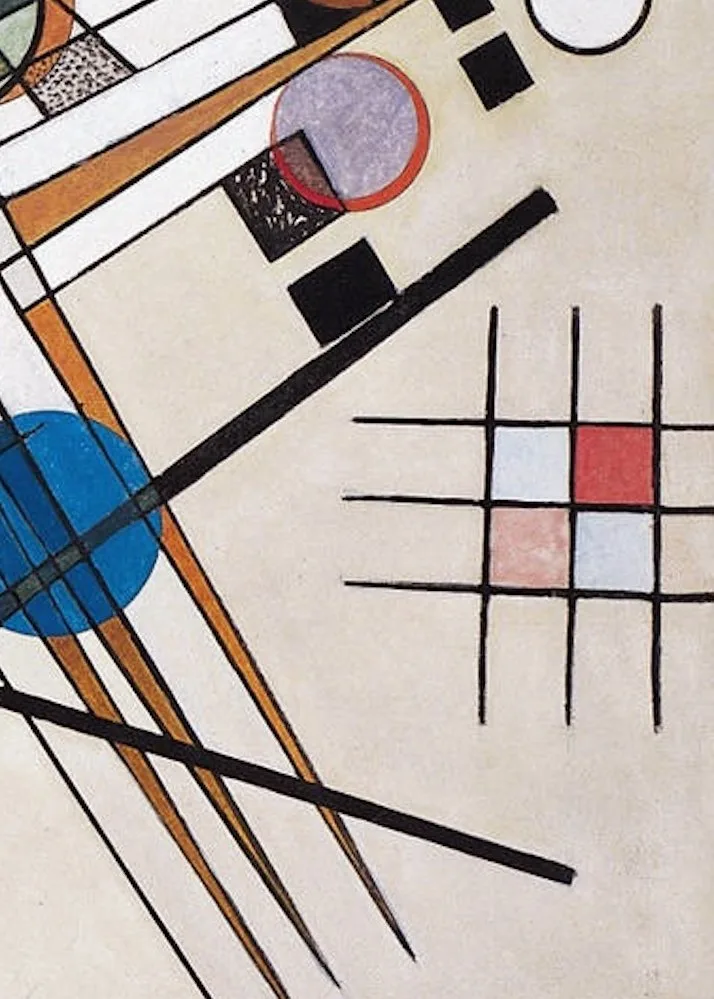
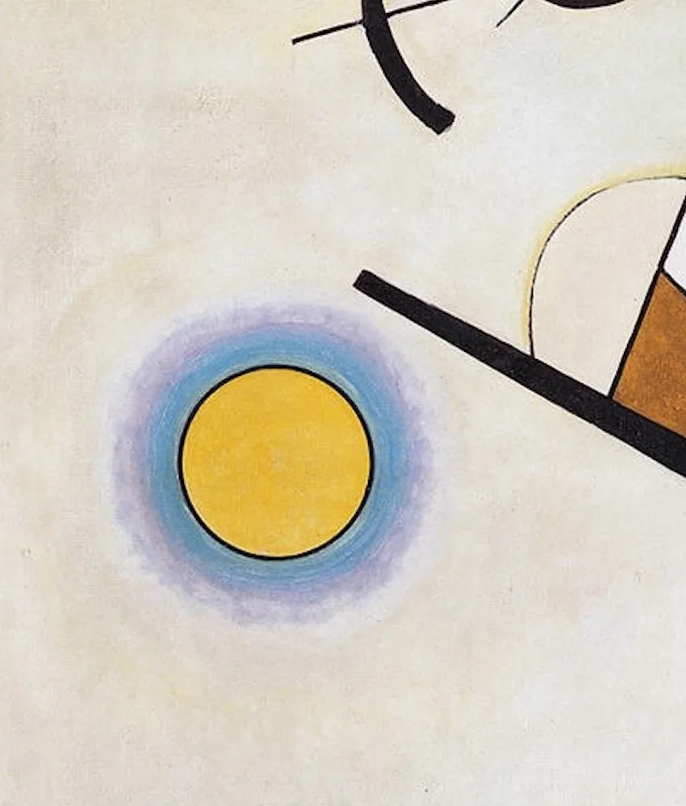
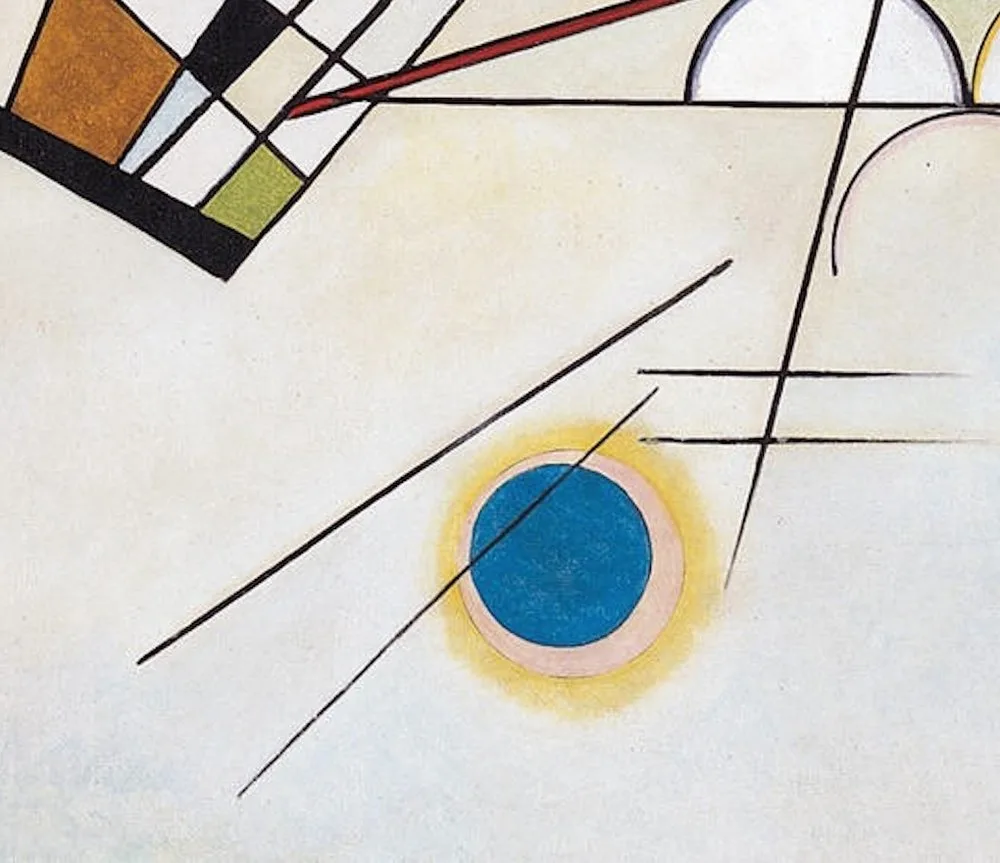
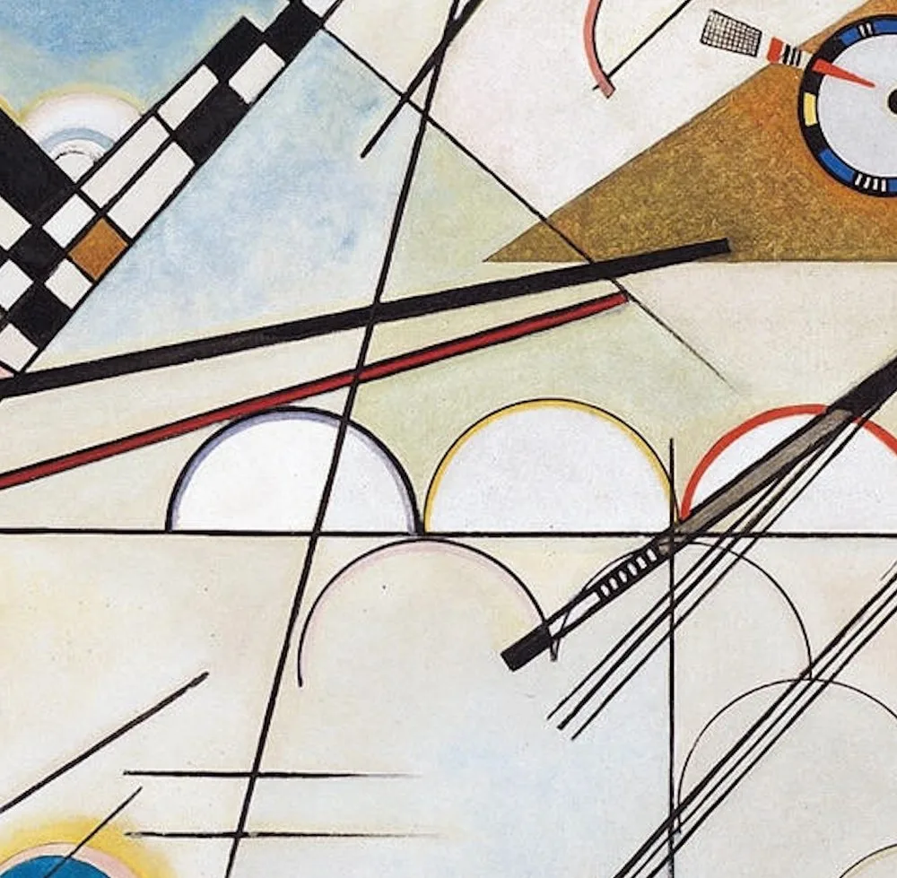

1923 年的魏玛包豪斯，康定斯基已经不再画山、不画马、不画任何具体的东西。他把世界拆成最单纯的元素——圆、三角、线、色块——再把它们摆回画布上，像一位作曲家摆弄音符。
《构成第八号》作于 1923 年，是康定斯基在包豪斯任教时期的代表作，也是他「热抽象」走向「几何抽象」的关键一步。画布上没有一个可辨认的物体，只有圆、三角形、直线、棋盘格与细密的网格。
康定斯基相信，形状与颜色本身就具有情绪与「温度」。圆是静止与圆满，三角是锐利的运动，直线是方向；红是温暖前冲，蓝是冷静退远，黄则明亮而疏离。他写的《点·线·面》(1926) 几乎像一本为绘画制定的语法书。
所以这一页不替你找「这画的是什么」，只带你走近它：点开画面上的 ✦ 光点，去看那只黑圆、那组白环、那条棋盘带，以及它们彼此之间那种「对峙又平衡」的关系。留意一个事实——它什么都没画，你却觉得它在演奏。
—— 康定斯基《点·线·面》(1926) 与其包豪斯讲义（据通行研究）
在本页左下角，可以点亮一段为这场几何协奏特别挑选的钢琴独奏。
从一只黑圆到一组十字网格：每一个母题，都是康定斯基放在画布上的一个「音符」。

点按画面上的 ✦ 光点，查看每一个几何母题
从慕尼黑到魏玛，从「即兴」到「构成」——康定斯基用了十几年，把抽象画从情绪引向秩序。
1911 · 慕尼黑 · 起点
1911 年，康定斯基与马克等人创立「青骑士」社，提倡艺术应表达「内在需要」而非外在形似。他此时的抽象还带着强烈的情绪与书写感，被称为「热抽象」——形状像是从心底直接涌出。
➤1922 · 魏玛 · 包豪斯
1922 年，康定斯基受邀到魏玛包豪斯任教。学院强调理性、结构与工艺，他的画风也随之转折：自由的抒情让位于圆、三角、线等「基本元素」的精确编排，形成所谓的「几何抽象」。《构成第八号》正是这场转向的结晶。
➤1926 · 理论成形
1926 年，他出版《点·线·面》，系统阐述形状、颜色与构图的关系。书中那些分析图，与《构成第八号》里的网格、靶环、楔形几乎是一套语言的两面——画与理论，互为注脚。

他在讲义里把绘画元素分成几组「对立」：大与小、暖与冷、明与暗、动与静。一幅好画，就是让这些对立在同一个平面里同时发声，又不至于炸开。
《构成第八号》几乎是这条原则的范本：左上那只巨大的黑圆（静、重）与四周奔跑的锐角（动、轻）对峙；红（暖）与蓝（冷）遥相呼应；中央的靶环把所有的方向收束成一个「不动的点」。
他有一句常被引用的话：圆是「最大对立的综合」。画里那只黑圆之所以压得住全场，正因为它是所有方向、所有张力的终点——它在画面里什么都不指向，却让一切都有了归属。
※ 「圆是最大对立的综合」「三个大敌」等表述见康定斯基《点·线·面》及包豪斯讲义；具体译文各家略有出入，本页取其通行意旨。
康定斯基把绘画拆成基本元素，像作曲家拆出音符。以下是最常出现的几位「主角」。
最安静也最重的形状，康定斯基说它是「最大对立的综合」。

最具方向感的形状，浅蓝的一片把视线悄悄引向中央。

黑白相间的斜带，像乐谱里反复出现的固定音型。

各种方向在此交汇，又向四方散开的中枢。

贴着右缘的黑线网格，与左上黑圆遥相呼应。

黄与蓝、实与空，一次轻而清亮的呼应。

坐在下缘，像低音区的长音，托住上方所有跳跃。

在满幅直线之间提供弧度，使构图不显冷硬。
1919 年成立的包豪斯学校，主张打破纯艺术与实用工艺的界限。康定斯基、克利、蒙德里安等人都在这里任教，把抽象从个人情绪推向一套可教的「视觉语法」。《构成第八号》正是这一理想的产物。
艺术史常把抽象分为两支：康定斯基式的「热抽象」（情绪、书写、音乐性）与蒙德里安式的「冷抽象」（网格、直角、纯粹秩序）。1923 年的康定斯基，正处在从热向冷过渡的拐点——画面既理性，又仍保留着呼吸。
康定斯基相信颜色、形状与音乐之间存在着通感：他写过自己「听见」颜色、也「看见」声音。这与稍后的勋伯格、与俄国先锋派的主张相通。把这幅画当作一首「视觉交响曲」来听，并非比喻，而是他本人的信念。
康定斯基把一批最具结构性的大尺幅作品命名为「构成」(Composition) 系列，《构成第八号》是其中传播最广的一张。它既不描述故事，也不模仿自然，只是把纯粹的元素摆对位置——然后，让它们发声。
康定斯基于魏玛包豪斯创作《构成第八号》，布面油画 140 × 201 cm，是其几何抽象转向的里程碑。
出版理论著作《点·线·面》，系统阐述形状与颜色的关系，与画作互为注脚。
包豪斯被纳粹关闭；康定斯基移居巴黎，抽象绘画一度被指为「颓废艺术」。
《构成第八号》藏于纽约所罗门·R·古根海姆美术馆，是该馆螺旋厅最常被凝视的抽象画之一。